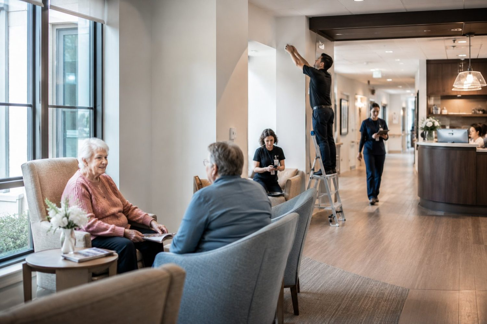
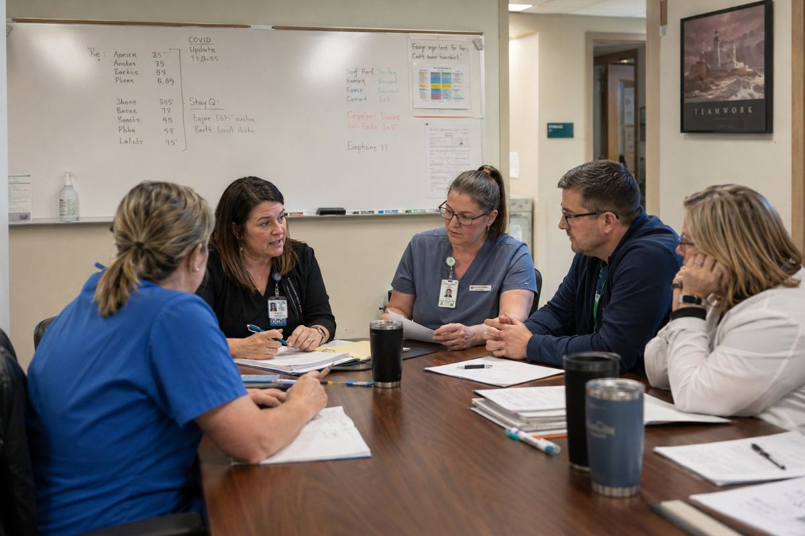
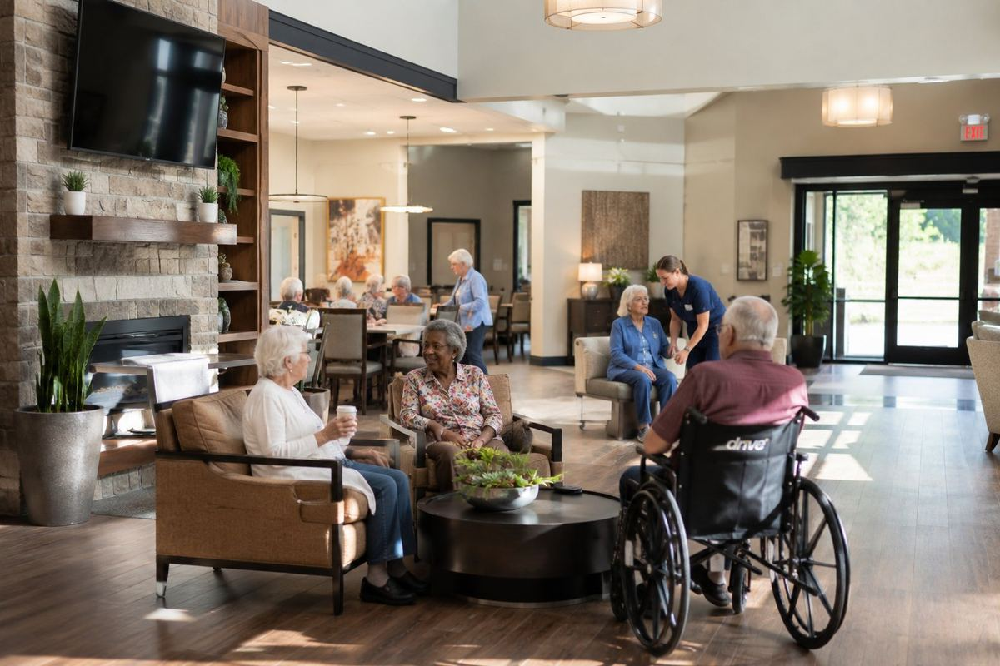
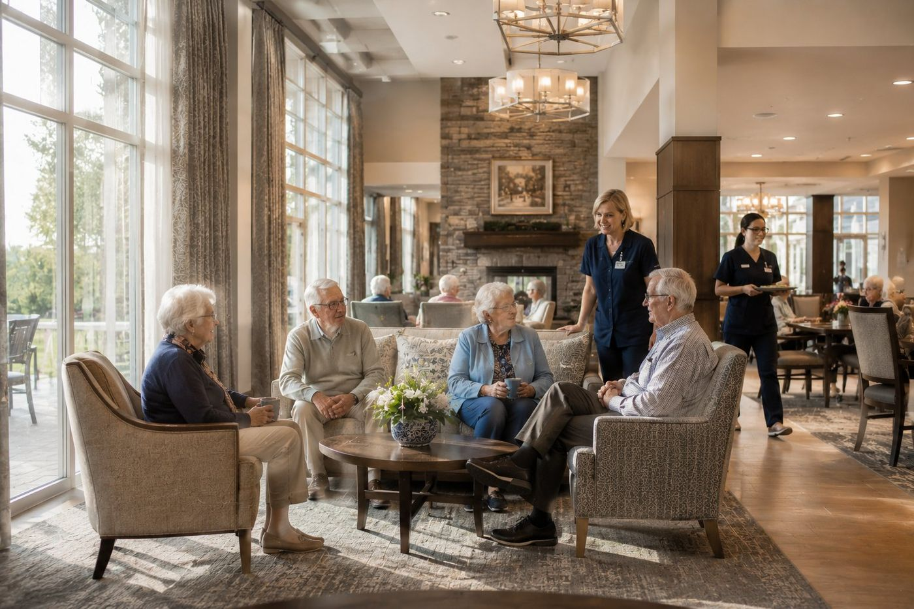
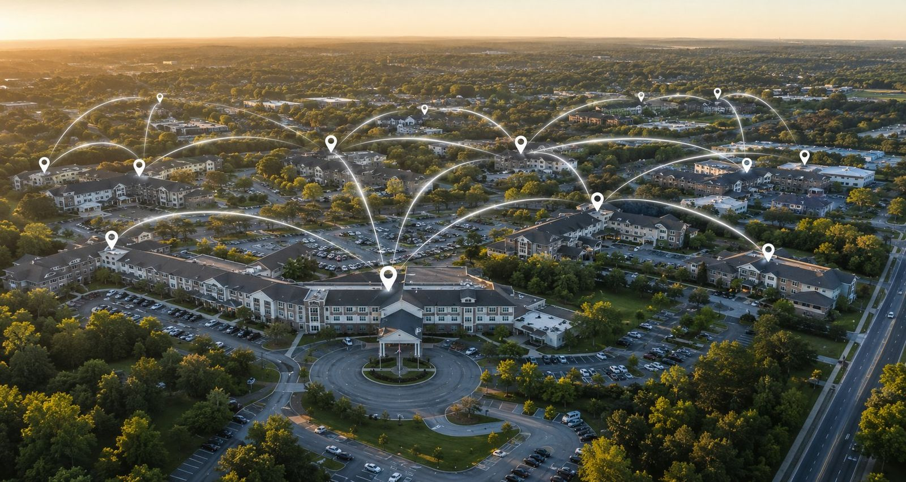

Continuous monitoring
for long-term care
TRC delivers continuous visibility into resident health so your team can act sooner, support better outcomes, and reduce risk.
Ambient monitoring with no wearables or disruption.
Meaningful clinical signals surfaced with context.
A dedicated team supporting implementation and ongoing use.
Designed to work alongside the systems healthcare teams already use
See how Total Remote Care works inside a facility
From ambient monitoring to actionable alerts, TRC gives long-term care teams continuous visibility without disrupting residents.
More than a
monitoring platform
Total Remote Care helps long-term care organizations gain better visibility into resident health through continuous monitoring, meaningful insights, and proactive support.
Continuous Monitoring
Ambient sensors, no wearables, no disruption.
Meaningful Insights
Personalized baselines and early signals.
Proactive Support
Dedicated guidance from implementation through ongoing use.
Care continues
when no one is
in the room.
Total Remote Care provides continuous, ambient visibility that helps care teams notice meaningful changes sooner, not just at the next scheduled round.
Outcomes that matter
to your facility
TRC helps long-term care teams act earlier, see more, and focus on what truly matters, resident care.
Earlier Identification of Clinical Changes
Continuous monitoring helps surface meaningful changes before the next scheduled round, creating time for earlier intervention.
Improved Visibility Between Care Rounds
Ambient awareness fills the gaps between in-person assessments, including overnight and between shifts.
Reduced Alert Fatigue
Alerts calibrated to each resident's baseline help teams focus on clinically meaningful changes, not constant noise.
How Alerts Work
TRC helps care teams understand meaningful changes sooner, without overwhelming staff with unnecessary noise.
Continuous Baseline Monitoring
TRC monitors resident patterns over time, helping identify changes from each resident's normal baseline.
Meaningful Change Detected
When a concerning trend or change appears, the platform flags it for review.
The Right Team Is Notified
Alerts can be routed to nursing leadership, facility administrators, care coordination teams, or designated clinical contacts based on the facility's workflow.
Follow-Up Is Documented
Alerts, trends, and follow-up activity can support reporting, care coordination, and RPM/CCM documentation.
TRC supports facility care teams and is designed to complement, not replace, clinical judgment, staffing, or established emergency protocols.
Built for long-term care
TRC is designed for the specific demands of long-term care environments, where continuous oversight and operational efficiency matter equally.
Skilled Nursing Facilities
Continuous monitoring for high-acuity residents requiring close clinical oversight.
Assisted Living Communities
Ambient oversight supporting resident independence with meaningful health visibility.
Rehabilitation Centers
Post-acute monitoring to track recovery and identify changes requiring attention.
Long-Term Care Facilities
Scalable monitoring for residents with complex, chronic, and evolving health needs.
Post-Acute Recovery Programs
Monitoring support for patients transitioning from acute care into long-term recovery.

What Happens After Installation
A clear, supported onboarding process that gets your facility monitoring with confidence, from first assessment through ongoing partnership.
Assessment
We review the facility layout, resident needs, and operational workflow.
Deployment
Ambient monitoring is installed with minimal disruption to residents and staff.
Monitoring Setup
Facility-specific alert pathways, reporting needs, and staff contacts are configured.
Ongoing Support
TRC continues supporting reporting, visibility, and workflow improvements over time.
Established. Trusted. Compliant.
Built around the standards long-term care organizations nationwide rely on.
HIPAA-conscious workflows
Resident data is handled with privacy and security at the center of every workflow.
EHR-ready integrations
Designed to work alongside the clinical systems your teams already rely on.
RPM/CCM documentation support
Alerts, trends, and follow-up activity can support reporting and care coordination.
Facility-focused implementation
Configured around each facility's layout, staffing, and escalation process.
Continuous visibility.
Never intrusive.
TRC helps care teams stay informed with ambient monitoring designed to support residents quietly, respectfully, and without disrupting daily care.
Schedule a Facility Demo →About Total Remote Care
Built by clinicians and engineers who saw what happens when care goes unmonitored, and decided to change it.
Purpose-built for long-term care
Walk into any skilled nursing facility at 3 a.m. and you'll find the same scene: a handful of dedicated nurses, dozens of residents, a clipboard in hand, and a persistent question: what is happening with each resident right now?
TRC is built to answer that question before it becomes a clinical event. We believe every resident deserves to be watched over continuously, and every nurse deserves the tools to actually make that possible.
Our platform doesn't replace clinical judgment, it amplifies it. When our AI flags a trend, your team still makes the call. We just make sure they have the time and the information to make it well.
The gap between check-ins is where harm happens
Traditional nursing care is episodic by nature. Rounds happen every hour, every two hours. But deterioration doesn't wait for rounds. A resident's respiration can shift hours before collapse. A heart rate pattern can signal infection long before fever appears.
The data is there in every rise and fall of every chest, every night. Until TRC, no one was listening continuously enough to act on it.
We help close that gap. Across every resident and every shift, meaningful changes are surfaced for the care team to review when they matter.
Principles that drive every decision
Resident First
Every feature we build is evaluated through one lens: does this meaningfully improve the quality or safety of the care this person receives? If not, we don't build it.
Clinical Integrity
We don't chase vanity metrics. Our alerts are calibrated to reduce alarm fatigue, not feed it. The signal-to-noise ratio matters more to us than any dashboard statistic.
Trust Through Transparency
We handle sensitive health data with the seriousness it deserves. Our security posture, our compliance standards, and our data practices are never an afterthought.
A national team with dedicated roots
Total Remote Care is headquartered in Miami, Florida, and serves long-term care organizations across the United States. Our team combines deep clinical experience with health technology expertise.
We work directly alongside facility administrators, directors of nursing, and attending physicians to ensure our platform fits into real workflows, not idealized ones.
Every implementation is handled personally. We don't hand you a login and disappear. We stay until your team is confident, your residents are covered, and your data is clean.
Meet the Team →
TRC in a real facility
Watch how our platform transforms daily care operations.
See what proactive care looks like
Walk through the platform with one of our clinical specialists, with no sales pressure, just a real demonstration.
Schedule a Facility DemoOur Solutions
Two programs. One platform. A complete approach to proactive care in long-term facilities.
Remote Patient Monitoring
RPM provides continuous ambient awareness of every resident's physiological state. No wearables. No disruption. No gaps between rounds.
Sensors mounted discreetly in each room capture cardiorespiratory patterns and movement data around the clock. Our AI establishes each resident's personal baseline and watches for deviations that carry clinical weight.
When something matters, your team knows. Not after the fact - while there's still time to act.
What your facility gets from day one
Continuous Vital Monitoring
Heart rate, respiration rate, and movement are monitored continuously, with no action required from staff or residents.
Personalized Baselines
The AI learns each resident individually. Alerts are tuned to the person, not population averages that generate noise.
Intelligent Alerting
Clinically calibrated thresholds minimize alarm fatigue. Your team is alerted when it matters, not overwhelmed by noise.
Automated Documentation
Every data point logs automatically into your EHR. RPM minutes, thresholds, and alerts are documented for CMS billing without staff effort.
Trend Analysis
7, 14, and 30-day views surface gradual decline patterns that point-in-time assessments miss entirely.
Mobile Alerts
Nurses receive actionable alerts on their phones or tablets, with clinical context and not just a number, so they know how to respond.
Chronic Care Management
Most long-term care residents live with multiple chronic conditions simultaneously. Managing them in isolation - different providers, different schedules, different plans - creates gaps where complications grow.
CCM brings the whole picture together. Structured care plans, monthly clinical touchpoints, medication coordination, and care team collaboration, all orchestrated through a single platform and documented automatically.
The result: fewer acute episodes, tighter medication control, and residents who are more stable, more comfortable, and more engaged in their own care.

Structured care for complex patients
Individualized Care Plans
Structured plans tailored to each resident's conditions, goals, and care team, updated and versioned automatically.
Monthly Clinical Touchpoints
Scheduled care coordination calls ensure no resident falls through the cracks between physician visits, documented for CMS compliance.
Medication Management
Polypharmacy tracking flags potential interactions and adherence gaps before they compound into adverse events.
Care Team Coordination
Physicians, nurses, social workers, and specialists share a single view of each resident's status and history.
CMS Billing Ready
All CCM activity is automatically timestamped and formatted for Medicare billing, with no retroactive documentation required.
Condition Progression Tracking
Longitudinal views show how each chronic condition is trending, giving providers the context to adjust care before conditions worsen.
Why continuous monitoring changes outcomes
The most difficult moments in long-term care are often the hours before a crisis, when early signs are present but easy to miss between scheduled rounds.
Before a Hospitalization
Clinical research shows that measurable physiological changes typically occur up to 72 hours before a resident requires emergency transfer. Continuous monitoring captures this window. Episodic check-ins miss it entirely.
Cause of Preventable Transfers
Respiratory deterioration, detectable through respiration rate trends, is the leading cause of avoidable hospital transfers from SNFs. It is also the most consistently captured by ambient monitoring technology.
Chronic Conditions Per Resident
The average SNF resident manages five or more chronic conditions simultaneously. Each one interacts with the others. CCM provides the structured coordination that prevents these interactions from compounding into acute events.
Medicare reimburses what improves outcomes
RPM and CCM are not just clinical programs, they are reimbursable services under Medicare. CPT codes 99453, 99454, 99457, and 99458 cover remote monitoring setup, device supply, and clinical review time. CCM codes cover monthly care coordination across chronic conditions.
For a 60-bed facility with 40 qualifying residents, properly documented RPM and CCM programs represent meaningful recurring revenue, generated by care your team is already providing, now simply captured and documented correctly.
TRC builds the documentation infrastructure that makes this billing defensible, consistent, and audit-ready from day one.
Explore Our Solutions →The complete picture of resident health
RPM catches the acute: the overnight dip, the subtle vital shift, the early sign of deterioration. CCM manages the chronic: the diabetes, the CHF, the COPD that require constant, structured attention. Together, they form a care infrastructure that leaves nothing unmonitored.
See both programs in action
Our clinical specialists will walk you through a live demonstration tailored to your facility type and census.
Schedule a Facility DemoOur Technology
Clinical-grade hardware, AI-powered intelligence, and integrations that fit into how your facility already operates.
Ambient sensors. Zero wearables. Zero burden.
TRC's proprietary sensors are mounted discreetly in resident rooms, on the wall or ceiling, out of sight, never in the way. They capture micro-movements and cardiopulmonary patterns using non-contact, non-invasive technology.
Residents don't wear anything. They don't charge anything. They don't press any buttons. The monitoring is simply always on, completely passive and completely continuous.
Installation takes under 30 minutes per room. No construction, no wiring, no IT infrastructure changes required. Our team handles everything and clears the space before we leave.
AI that learns every resident individually
Population-level thresholds generate noise. A heart rate of 90 bpm means something very different for a resident whose normal is 65 versus one whose baseline is 88. Our AI knows the difference.
During the first 72 hours, the platform establishes each resident's unique physiological baseline. From that point forward, every alert is relative to the individual, not a standard clinical range pulled from a textbook.
The models are continuously updated as residents age, recover, or are admitted with new conditions. The system learns alongside your clinical team, not in spite of it.
Works with the systems you already use
TRC is designed to disappear into your existing workflow, not add a new one.
PointClickCare
Native integration with the most widely used long-term care EHR. Vitals, alerts, and CCM documentation flow in automatically.
eClinicalWorks
Bi-directional integration ensures your clinical data stays in one place, with no copy-paste and no duplicate records.
Real-Time Dashboard
A facility-wide command view for charge nurses and administrators, on any device or browser, secured with role-based access.
Mobile App
Nurses receive push alerts with full clinical context on iOS and Android, so the right person is always in the loop, wherever they are on the floor.
Encrypted Data Pipeline
All data is encrypted in transit and at rest. Zero PHI is stored in the sensor hardware itself, only your secured cloud instance holds resident data.
HL7 / FHIR Ready
Standard healthcare interoperability formats mean TRC can connect to virtually any modern clinical system your facility uses or plans to adopt.
Enterprise-grade security from day one
TRC is built on a HIPAA-compliant cloud infrastructure with end-to-end encryption, multi-factor authentication, and granular role-based access controls. Every action taken in the system is logged and auditable.
Your residents' data never leaves your secured instance. Our sensors capture signals, not identifiable information, and all enrichment, storage, and analysis happens in your encrypted environment.
We undergo independent SOC 2 Type II audits annually and maintain continuous compliance monitoring between cycles.
Want a technical deep dive?
Our implementation team can walk through architecture, security documentation, and integration specs with your IT leadership.
Request a Technical ReviewWho We Serve
TRC is built for every stakeholder in the long-term care continuum, because better outcomes require everyone working from the same picture.
Run a safer, stronger facility
SNFs operate under relentless pressure: survey readiness, staffing ratios, hospitalization rates, star ratings, and the constant weight of caring for medically complex residents with finite resources.
TRC is designed to make that environment more manageable, not by adding complexity, but by giving your clinical leadership a clearer view of what's happening across the facility throughout the day.
When your nurses know, your facility leads. When your data is clean, your surveys go better. When hospitalizations drop, your reputation and revenue both improve.

What changes when TRC is in place
Survey Readiness
Continuous documentation and clean audit trails mean your records are always ready for state surveys, not assembled in a panic the week before.
RPM & CCM Revenue
Medicare reimbursement for RPM and CCM is available to qualifying residents. TRC handles the documentation infrastructure that makes billing defensible and consistent.
Staff Retention
When nurses have better tools and fewer reactive emergencies to manage, burnout decreases. TRC is an investment in your workforce as much as your residents.
The clinical context you've always needed
Attending physicians and NPs managing residents across multiple SNFs work from snapshot data: a note here, a call there, a visit once a week. Critical changes happen between those touchpoints.
TRC gives providers a longitudinal view of each resident's physiological status between visits. When something changes, you're notified with context, not just a number but the trend, the baseline deviation, and the timeline.
That context is the difference between a proactive medication adjustment and a 2 a.m. emergency transfer.
The peace of mind you deserve
Placing a parent or spouse in a care facility is one of the hardest decisions a family makes. The worry that follows, especially at night, on weekends, during holidays, is real and constant.
TRC means that even between scheduled rounds, your team has continuous visibility. When something warrants attention, the right people are notified to review and respond.
Families at TRC-enabled facilities know their loved ones aren't waiting to be found. The system finds the change. The nurses respond. That's the promise.
Ready to bring TRC to your facility?
Whether you're a facility administrator, a medical director, or a family member asking questions, we're here to help.
Get in TouchCompliance & Security
Every resident's data is sensitive. Every facility's reputation depends on how that data is handled. We treat both with the seriousness they deserve.
Compliance is architecture, not an add-on
TRC was designed with regulatory compliance embedded into its foundation, not applied as a layer after the fact. HIPAA requirements, CMS documentation standards, and data security controls are built into every component of the platform.
This means your facility inherits a compliance posture from day one. When auditors ask for documentation, it's there. When surveys question monitoring records, they're airtight. When patients or families ask how their data is protected, you have a clear answer.
Independently verified, continuously maintained
HIPAA Compliant
Full administrative, physical, and technical safeguards in place. BAAs executed with all downstream data processors. Breach response protocols tested and documented.
CMS Aligned
All RPM and CCM documentation follows CMS billing and quality reporting standards. Every minute logged, every threshold crossed, every alert sent, timestamped and formatted for reimbursement.
FDA Registered
TRC's monitoring devices are registered with the FDA as general wellness and clinical monitoring devices, with clinically validated accuracy for the vital signs they measure.
SOC 2 Type II
Independently audited security controls covering availability, confidentiality, and processing integrity. Annual audits, with continuous monitoring between cycles.
HL7 / FHIR Compliant
All data exchange follows healthcare interoperability standards, ensuring clinical data moves cleanly between TRC and your EHR without transformation errors or data loss.
Role-Based Access Control
Granular permission levels ensure that each staff member sees exactly what they need, and nothing they don't. Every access event is logged with timestamp and user identity.
Your data stays yours
TRC does not sell, license, or aggregate resident health data for any secondary purpose. Your facility's data is yours, used exclusively to deliver the monitoring and care coordination services you've contracted for.
Sensors capture physiological signals, not identifiable information. All identity linkage and enrichment happens within your encrypted instance, under your facility's BAA, with access limited to credentialed personnel.
We maintain a full data processing record at all times, exportable on request for legal, regulatory, or internal audit purposes.
Need our compliance documentation?
We can provide BAAs, security summaries, and audit reports upon request. Reach out to our compliance team directly.
Request DocumentationGet in Touch
Whether you're evaluating TRC for your facility or have a specific question. We respond within 2 business hours.
We'd love to hear from you
Our team includes clinical specialists who have worked inside skilled nursing facilities. When you talk to us, you're talking to people who understand your environment.
What to expect
A brief call with one of our clinical specialists, not a sales rep. We'll ask about your facility, your current challenges, and whether TRC is the right fit. No pressure, no jargon.
How We Implement
From signed agreement to fully operational monitoring. Here is exactly what happens, step by step.
A structured, efficient process with minimal disruption to your facility.
Every TRC implementation is managed personally by our clinical team. We have done this enough times to know what derails adoption, and we have built our process specifically to avoid it.
Most facilities are fully operational within 5 business days of signing. Staff training takes under an hour. Residents experience zero disruption to their daily routine.
Below is exactly what to expect from contract through the first 90 days and beyond.
What happens after you sign
Pre-Implementation Planning
Your dedicated implementation manager contacts you within 24 hours of signing. Together you complete a brief intake covering facility layout, census, and EHR configuration. No heavy lifting on your end, we do the preparation.
- Facility floor plan review and sensor placement planning
- EHR credentials and integration setup initiated
- BAA executed and compliance documentation delivered
- Staff communication templates provided for your team
Sensor Installation
Our technicians arrive on-site and install ambient sensors across your facility. Each room takes under 30 minutes. There is no construction, no wiring, and no disruption to residents or ongoing care activities.
- All sensors installed, powered, and confirmed transmitting
- Network connectivity verified on your existing infrastructure
- Each sensor assigned to the correct resident and room
- Facility dashboard live and accessible before we leave
Baseline Learning Period
The AI spends the first 72 hours establishing each resident's individual physiological baseline. During this window, the system observes without alerting, collecting the data it needs to distinguish meaningful changes from normal variation.
- Heart rate, respiration, and movement baselines established
- Individual alert thresholds calibrated per resident
- Historical trends begin populating in the dashboard
Staff Training
We run a focused training session for your nursing and administrative staff. The platform is designed for busy clinicians. Training takes under an hour and covers everything from reading alerts to interpreting trend data.
- Dashboard navigation and resident views
- Alert response protocols tailored to your facility workflow
- Mobile app setup for all nursing staff
- EHR documentation walkthrough, covering how data flows automatically
- Director of Nursing admin panel and reporting overview
Live Monitoring - Full Operation
Alerts are active. Your team is receiving notifications. Data is flowing into your EHR. The system is fully operational and your implementation manager remains on-call for the first two weeks to answer any questions in real time.
- Real-time alerts delivered to nursing staff
- CMS-formatted documentation generating automatically
- Daily summary reports available for charge nurses
- RPM and CCM billing documentation live and auditable
Ongoing Support & Optimization
TRC is not a set-it-and-forget-it product. Your dedicated customer success manager checks in monthly to review alert calibration, address any workflow friction, and ensure your team is getting maximum value from the platform.
- 30-day clinical review: alert accuracy and threshold tuning
- 60-day operational review: staff workflow and adoption
- 90-day outcomes review: trends, hospitalizations, documentation
- Quarterly business review with facility leadership
Almost nothing
We handle the heavy lifting. Here is the short list of what helps an implementation go smoothly on your end.
Wi-Fi Access
A stable Wi-Fi network or the ability to add a simple cellular gateway. Our team assesses connectivity requirements during pre-implementation.
An IT or Admin Contact
One point of contact for EHR access credentials and any internal IT approvals. One meeting, 30 minutes, and it is done.
Two Hours of Staff Time
One hour for installation coordination, one hour for training. That is the total ask from your team. We work around your schedule.
Updated Resident List
A current census with room assignments so sensors can be correctly mapped to residents before we arrive. We provide the template.
Ready to get started?
Schedule a demo and we will walk you through the full implementation plan for your specific facility.
Schedule a Facility DemoFrequently Asked Questions
Answers to the questions we hear most often from facility administrators, directors of nursing, and clinical teams.
RPM is continuous, technology-enabled monitoring of a patient's vital signs and physiological data outside of a traditional clinical setting. For long-term care facilities, this means ambient sensors in resident rooms that track heart rate, respiration rate, and movement 24 hours a day, without wearables, without interrupting residents, and without additional work for your nursing staff.
Nurse call systems and bed alarms are reactive, responding after something has already happened (a fall, a button press, a resident leaving bed). TRC is predictive. Our AI monitors continuous physiological trends and identifies the patterns that precede a deterioration event, hours or days before it becomes a crisis. You are not responding to emergencies. You are preventing them.
No. TRC sensors are mounted in the room, not on the resident. There are no wearables, no patches, no devices to charge or wear. Residents continue their daily routines completely unchanged. Many residents are entirely unaware the monitoring is occurring, which also avoids many of the compliance challenges common with wearable monitoring programs.
Sensor installation takes under 30 minutes per room. A typical 60-bed facility is fully installed in one day. Our team handles all installation. There is no construction, no drilling into walls, and no disruption to resident care or daily activities. Most facilities are fully live within 3 to 5 business days of signing.
The system spends the first 72 hours after installation learning each resident's individual physiological baseline: their normal heart rate range, their typical breathing patterns, their movement behavior day and night. Alerts are triggered based on meaningful deviations from that personal baseline, not a one-size-fits-all clinical threshold. A heart rate of 90 bpm means something very different for a resident whose normal is 65 versus one whose baseline is 88. The AI knows the difference.
This is one of our primary design concerns. TRC is built to reduce alarm fatigue, not contribute to it. Because alerts are personalized to each resident's baseline and calibrated for clinical significance, the signal-to-noise ratio is high. During the first 30 days, your implementation manager actively works with your team to tune thresholds to your facility's specific environment. If your nurses are getting too many alerts, we adjust. That is part of the ongoing service.
TRC continuously monitors heart rate, respiration rate, and movement patterns. These three indicators, when tracked together longitudinally, provide the earliest detectable signals of the most common causes of deterioration in long-term care residents, including respiratory infections, cardiac events, sepsis onset, and dehydration. Our CCM program also incorporates additional condition-specific tracking integrated from clinical assessments.
The assigned nurse receives a push notification on their mobile device and a dashboard alert. The alert includes the resident's name, room number, the specific vital sign or pattern that triggered it, the severity level, and a trend visualization showing the deviation from baseline. Your team decides how to respond. TRC provides the intelligence, your clinicians exercise the judgment.
TRC integrates natively with PointClickCare, the most widely used EHR in skilled nursing facilities, as well as eClinicalWorks, and other major platforms via HL7/FHIR-compliant APIs. If your facility uses a system not on this list, contact us. We have integrated with dozens of platforms and our technical team will assess compatibility during pre-implementation at no additional charge.
TRC sensors can connect via your existing Wi-Fi infrastructure or via dedicated cellular gateways if Wi-Fi coverage is insufficient. Our implementation team conducts a connectivity assessment before installation to identify any gaps. Most facilities require no network changes whatsoever. For facilities with challenging infrastructure, we provide cellular gateway hardware as part of the implementation package.
All resident data is stored in a HIPAA-compliant, SOC 2 Type II audited cloud environment. Each facility operates within its own isolated data instance, and your resident data is never co-mingled with another facility's data. Access is controlled by role-based permissions that you configure. TRC staff can only access your data with your explicit authorization for support purposes, and all such access is logged and auditable.
Yes. Medicare reimburses for Remote Patient Monitoring under CPT codes 99453, 99454, 99457, and 99458. CCM is reimbursed under CPT codes 99490, 99491, 99487, and 99489. Eligibility requirements apply and vary by patient. TRC generates all the documentation required to support billing, including time logs, device readings, clinical review records, and care plan updates, automatically and in CMS-compliant format. Your billing team submits; we do the paperwork.
TRC provides the documentation infrastructure and reporting required for billing, but we do not submit claims on your behalf. Your existing billing team or billing partner handles claim submission using the records TRC generates. If your facility does not have billing expertise for RPM and CCM, we can refer you to specialized billing partners we work with. We make the documentation bulletproof; your team or partner handles the submission.
TRC maintains a continuous, auditable record of all monitoring activity, including every alert, every clinical review, every care plan update, and every vital sign data point. This record can be exported in standard formats on demand. Facilities using TRC have found survey preparation significantly less burdensome because the documentation is always current, always complete, and always accessible. Your surveyor asks for a record; you pull it in seconds.
Have a question we didn't answer?
Reach out directly and one of our clinical specialists will get back to you within 2 business hours.
See TRC in a Facility DemoNationwide Coverage
Total Remote Care operates across the United States, bringing proactive monitoring to skilled nursing facilities in every region.
Serving facilities nationwide
Hover over any state to explore. TRC operates across all 50 states.
Where TRC operates
From coast to coast, TRC partners with skilled nursing facilities, assisted living communities, and long-term care providers across every region of the United States.
All 50 States
Licensed to operate in every state, with active facilities across major metro and rural markets
Rapid Deployment
Implementation team available nationwide, with most facilities going live within 5 business days of signing
Any Facility Size
From 30-bed rural SNFs to 300+ bed urban facilities, TRC scales to your census and floor plan
Local Support
Regional clinical specialists provide on-site training and ongoing support in your area
Growing alongside the long-term care industry
The demand for remote patient monitoring in skilled nursing facilities is accelerating across every region. CMS reimbursement policies, state survey requirements, and post-pandemic staffing pressures have made continuous monitoring a strategic priority, not just a clinical one.
TRC is actively expanding its footprint in partnership with multi-facility operators, hospital systems with SNF affiliates, and independent facilities looking to lead their markets on quality metrics.
If you are located anywhere in the United States and want to bring TRC to your facility, our implementation team is ready to move.
Check Availability in Your Area →
Ready to bring TRC to your facility?
Tell us where you are and we will connect you with your regional implementation team within 24 hours.
Schedule a Facility DemoResource Center
Educational perspectives on remote monitoring, long-term care, and the evolving landscape of resident oversight.
Understanding Alert Fatigue in Long-Term Care
When monitoring systems generate too many alerts, clinical staff become desensitized. This piece explores what drives alert fatigue and how facilities can work toward a more meaningful signal-to-noise ratio.
Read ArticleWhy Trend Monitoring Matters More Than Snapshots
A single vital reading tells you where a resident is right now. A trend tells you where they are going. This piece examines why longitudinal physiological data is increasingly central to proactive long-term care.
Read ArticleThe Future of Ambient Monitoring in Long-Term Care
Sensor technology, AI, and EHR integration are converging to create a fundamentally different model of clinical oversight. This article explores where ambient monitoring is headed and what it means for facility operations.
Read ArticleImproving Resident Visibility Between Care Rounds
The time between scheduled nursing rounds represents a significant visibility gap in most facilities. This piece looks at practical approaches to maintaining clinical awareness without increasing staff workload.
Read ArticleWhat Makes Remote Patient Monitoring Effective
Not all RPM programs produce meaningful clinical results. This article examines the factors that differentiate effective monitoring programs, from alert calibration to staff adoption and EHR integration quality.
Read ArticleEHR Integration and the Case for Connected Monitoring
Monitoring data that lives outside the EHR creates documentation gaps and workflow friction. This piece examines why EHR connectivity is a prerequisite for sustainable remote monitoring programs in long-term care.
Read ArticleHave a topic you'd like us to cover?
We're always adding to our resource library. Reach out and let us know what questions matter most to your team.
Get in Touch